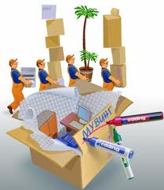

ОФИСНЫЙ ПЕРЕЕЗД
С переездом офиса связано намного больше проблем и хлопот, чем с квартирным переездом в связи с тем, что многие процессы этого переезда довольно сложно проконтролировать одновременно. Однако эти проблемы быстро решаются в нашей компании. Наши профессионалы не оставят Вам ни одной проблемы, связанной с офисным переездом.
Прежде всего, нужно помнить, что преждевременная подготовка является одним из самых важных аспектов при переезде, чтобы Вы успели тщательно обдумать все шаги. И вот здесь Вам стоит обратиться в «ДОМОВОЗ». Наши эксперты дадут Вам необходимые указания для выполнения подготовки к офисному переезду. Зачем Вам лишний раз беспокоиться и думать о подготовке офиса, если существует наша компания, которая всегда рада Вам помочь?  Не збудьте заказать упаковочные материалы! Очень важно, чтобы переезд не занимал много времени, ведь от этого зависит количество Ваших собственных затрат. Естественно, Вы можете и сами распланировать все свои действия, но лучше поручить это дело профессионалам. Поверьте, мы предоставим Вам наиболее быстрый и качественный переезд. Мы Вас не подведем! Единственное, что Вы должны сделать для офисного переезда – связаться с нами и осуществить заказ своего переезда или же заказать переезд прямо с нашего сайта. Доверьтесь нам и мы сделаем всё, чтобы и Ваш офисный переезд не составил для Вас никаких хлопот!
Обращайтесь к нам! |
|---|
Copyright ©2009 Domovoz.com